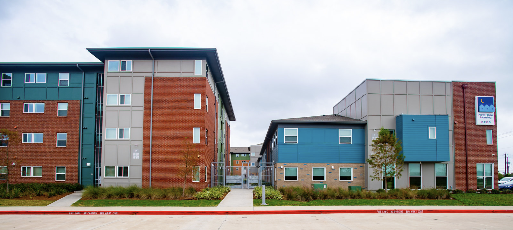

The Problem
A third of renters and homeowners across the country are experiencing housing related cost burdens. In 2021, 21.6 million households experienced cost burdens, with over half of them spending more than 50% of their income on housing. For homeowners, 19 million homeowners were cost burdened, with 8.7 million spending over 50% of their paychecks on housing costs (Habitat for Humanity). As the cost of housing rises, it displaces people from their homes and communities, and in many cases pushes them farther into the margins society. Away from economic centers, life becomes more expensive and time becomes a precious resource that is slowly being consumed by commute times.
This problem isn’t new. City governments have invested in affordable housing - but seemingly without consideration of what the purpose or opportunity they provided. Other attempts at building affordable housing have produced disastrous results. These government failures have deincentivized them from investing in new ways to provide affordable housing. Many solutions that are currently applied don’t incorporate the concept that affordable housing should be a tool for increasing stability and social mobility that can grant people autonomy and change the future.
Another issue is that there is a long term trend of diminishing supply for low-income needs. There are only 7 million affordable units for 11 million households with extremely low incomes; low income households are defined as “at or below either the federal poverty guideline or 30% of the area median income” (Housing Matters). Forcing millions of individuals to experience cost burden because of a lack of availability of affordable housing.
Main Takeaways
- There is not enough affordable housing available to meet the growing demand Gentrification leads to rising costs, and the displacement of people from rising housing costs has ramifications for access to public services like quality education, food, and transportation.
- Increasing density in areas to raise the median income to generator money for public services.
- Barriers to development in the private sector can be addressed with city regulations that require developers to build affordable housing for more square footage instead of paying for credits to develop inland affordable housing that never happens.
- A means to streamline the production of affordable housing is the inclusion of incentives such as: increased housing density, relaxed parking requirements, or other similar concessions influence the production of affordable housing.
- Data science can be used to make the identification of potential land and use by communities and private developers easier.
- Cities need to make the priority developing quality affordable housing that increases stability and social mobility that can grant people autonomy.
- Working with a wide range of local individuals who represent community groups, industries, and institutions, to leverage the wisdom of active partners in our community will assist in the facilitation of access to fair housing, clean water, air, and green spaces.
- Going beyond building homes, the public sector should collaborate with local industries and nonprofit organizations to create workshops/vocational schools and local job opportunities. Increasing the overall quality of life for residents through the implementation of a ground-up (community-based) rehabilitation process for unhoused people.

Figure 1: Star of Hope Mission 501(C)(3) Housing Development for displaced people in Houston, Texas (U.S. Dept. of Housing & Urban Development).
Why is it Critical
County-Wide Ramifications
Housing security is a concern that continues to stricken the minds of many Americans across the country. With very few affordable housing opportunities available on the market, only a small percentage of families are capable of investing in a home. As renting and housing prices continue to skyrocket above unprecedented levels and inflation invades every aspect of the cost of living, the majority of citizens are forced to live paycheck-to-paycheck. When living under such stressful, heavy cost-burden conditions, people seek opportunities for a better quality of life and often find themselves displaced from the communities they’ve always known as home.
When people are forced to uproot their lives because of cost-burdens, they’re at greater risk of experiencing financial instability. They are more likely to be subjected to eviction, homelessness, and other hardships because there is a lack of available affordable housing. These experiences are linked to detrimental psychological effects that lead to inter-generational trauma. Future generations are at the mercy of the rippling effects of housing insecurity. These migration trends of movement towards areas of lower market value directly impact the housing tax revenue generated by the city, which therein affects the funding collected for public schools. As the number of families displaced increases, school enrollment decreases, leading to the closure of schools, further worsening issues of disproportionate access to education.
Addressing the Issue
Addressing the issue of affordable housing availability jointly works to correct this cyclical systemic trend that is jeopardizing the health and freedom of millions of Americans nationwide. The individuals investing in housing expansion projects are typically wealthy private developers with a hefty staff at their disposal. A precedent practiced by private developers is to “play the market to maximize high value real estate and minimize affordable housing availability,” as stated by Rob Herschenfeld. Their pre-existing knowledge of the real estate market “promotes sophisticated games with elaborate rules and schemes with greater room for loopholes”.
Affordable housing projects need to be planned with common sense and consideration for necessary amenities. A home is more than 4 blank walls, a roof, and a door. Oftentimes, there is little to no consideration for the first-and-last-mile (FM/LM) issue. The FM/LM issue refers to the additional traveling required to reach public transportation (Jones). Affordable housing units are built in an isolated area, disconnected from access to transportation, healthcare, work, markets, parks/public spaces. Developments that neglect these essential amenities fail to foster a successful integration into the community. An additional pitfall is the lack of opportunities provided for steady income for individuals at risk of displacement.
To improve this issue, land use planner and Ventura City, CA District 1 community council member Helen Eloyan, promotes that the public sector should collaborate with local industries and nonprofit organizations to create workshops/vocational schools and local job opportunities. Increasing the overall quality of life for residents through the implementation of a ground-up (community-based) rehabilitation process for unhoused people. Laying this foundation empowers individuals to interact with their communities and exercise their natural rights using this new stable ground. Investing in our communities should be the focal point of affordable housing projects. This is a key component when building safe societies.
Population Density as a Solution
Re-framing affordable housing projects as opportunities to reinvest in our communities is a keystone in curating a sustainable future. There is a major disconnect between the number of affordable housing units available and the number of individuals in need of affordable housing. A solution to addressing the housing shortage, is the adoption of overlay zones to incentivize higher inclusionary ratios. This would allow for larger developments to be constructed at a lower cost per person compared to traditional zonal ordinances. Through the economy of the larger scale developments, housing is made available to a greater number of diverse individuals. Gentrification is Bad, let’s use it to Our advantage. In the States, we often do not feel united with one another. Within our society, we lack a social safety net. The idea of mutual aid within our communities feels unobtainable, as each of us are all bearing a similar cost-burden. The confines of our capitalist society inhibits Our ability to care and provide support for others. Our social structure places a higher value on a person’s production capabilities rather than altruistically valuing their life. These constraints have left most citizens subject to the whims of wealthy landowners and developers.
Understanding the economic trends in infrastructure developments across the country, allows us to use them to our advantage. Gentrification is an ever expanding and inevitable entity in the United States. Historically, it’s been a detrimental force that dismantles and deconstructs communities. In the context of affordable housing however, it could be leveraged as an anti-segregation tool. Wrangling gentrification as a means to control the wealth being invested into these communities is a potential solution to this epidemic of housing insecurity.
Developing policy guidelines and incentives for developers with deep pockets to invest in housing developments located in marginalized communities would introduce a pool of affluent individuals into the local economy. This is one approach to increasing the median income within a community and introducing new tax revenue into the community funding. However, it is critical that there is a firm grip on the reins of gentrification, so that it does not run amok. Restructuring gentrification so that the objective is to tackle the displacement problem through the introduction of housing that assists in increasing population density is imperative for these projects to be successful. The goal of these housing projects would be to bring in more people, improve transportation, accessibility, and affordability.
Figure 2: Home with accessory dwelling unit (ADU) attached in Lewiston-Auburn, Maine (U.S. Dept. of Housing & Urban Development).
Barriers
There are many barriers that exist as to why there is a lack of supply of available affordable housing. Two sources of the development of housing come from the private and public sector. Understanding those barriers is critical to streamlining the process and making it easier to build affordable housing. In many communities, housing cost burdens have been exacerbated by gentrification and the subsequent displacement of people. In NYC in the 1990’s, murmurs of rezoning changing in the manufacturing neighborhood of Williamsburg spurred many developers in the know to target poor land owners in the area who ended up selling their buildings for a couple hundred thousand dollars. Only a couple of years later, that land would be worth over three million dollars.
Over the last three decades, rezoning has transformed Williamsburg, and the amenities and quality of life that are provided in the area. Gentrification and the people and money it brought in has spurred investment into transportation and food services in the area. It has also led to a massive barrier to anyone that cannot afford to live there and access those services. There is nothing stopping the city from rezoning other areas and spurring a cascade of opportunities and consequences. A developer friendly government makes it easy to exploit people in areas with high potential but low investment. Developing a framework that invests in communities without driving displacement is critical to building more equitable cities.
Private Developer Insight
Why don’t they build affordable housing?
There are two components of building housing: acquiring the land and affording the construction load. Assuming that the city owns a bunch of land and wants to develop it into affordable housing, there is an “opaque system for financing it.” As a private developer, if you want to build affordable housing there are no easy resources to allow you to access what land is available.
What would make it easier? Incentives?
In NYC there is a two tiered system that essentially invests in affordable housing. A developer can pay the city a “tax” that goes into a fund for affordable housing. In return, the developer gets additional square footage for their building. The irony here is that there is no promise to actually build the affordable housing that you just paid for. This allows rich developers to build luxury apartment buildings in amenity-rich areas, and offset their affordable housing units to less prime areas that lack the community infrastructure to support those residents. They give away the most valuable land and developers buy credits for inland development that never happens.
There are solutions that the City could implement to address this cycle of empty promises. The first is to remove the middle man. Instead of paying a tax to fund projects that may or may not happen, the City can present a proposed zoning and floor area plan for buildings without affordable housing, and a proposal if developers want to build affordable housing. If they want to build affordable housing, they give the extra square footage for free and the developers are required to build that many square units of affordable housing on the land they acquired.
The second solution is establishing a system in which the development of luxury apartments is tied to the development of affordable housing. Developers would be required to develop an equal number of affordable housing units as luxury ones.
The complication of zoning laws and codes provides greater loopholes for private developers to do less good. A simplification of the ‘code book’ that gives developers clear rules for the percentage of their buildings that should be mixed use. The key here is mixed-use. The building of affordable housing within luxury developments means that “you can’t make a shithole.”
Figure 3: 171 new low-Income housing developments in South Bronx, New York (New York City Housing Preservation & Development).
Where do these rules come from?
These rules can be implemented at city or federal levels. There are federal funds available for affordable housing developments, and they could be distributed by city governments to fund these projects. To opt into this system developers can be told that they just have to be “a willing participant.”
Opportunities
There is an opportunity to reconstruct the way we think about affordable housing. We can begin by creating more descriptive goals that address our aspirations for our cities to be places:
People can work and thrive.
People can be productive in the community.
People are safely and comfortably housed.
People are educated equitably.
We also want to develop policies that financially support projects that promote an equitable attainment of these goals. By educating industry professionals about opportunities to invest in affordable housing we can get an all hands on deck movement.
Public Sector Insight
What are the biggest barriers to cross with Affordable Housing Projects?
Helen Eloyan explained that in her experience, one of the toughest boundaries to cross when building affordable housing is the cost. Even though the housing unit is listed below-market prices, the costs associated with building are that of a market-rate unit. When constructing affordable housing, the cost is dependent on factors such as: zoning regulations, labor and supply costs, and community needs.
Necessities such as emergency access, parking, and open space must be conserved. Additionally the City’s resources (evacuation planning, fire fighting equipment for larger buildings, accessible transit options, etc.) to support these housing developments must be included in the overall planning.
The biggest barrier preventing affordable housing development production is the inherent bureaucratic process that presents many obstacles and is often too difficult to navigate for those trying to benefit the community. Each City has its own planning process that can make or break a project workflow. In a worst case scenario, the development phase is expensive, slow, and unresponsive for all stakeholders. There is poor communication amongst community members, community leaders, and project planners prior to environmental analysis have been conducted. This neglect to consider the community’s insight presents gaps in the environmental impact reports, that are costly corrections, further prolonging the project. – This is usually the case for most cities.
What barriers prevent people at risk of displacement from obtaining affordable housing?
A huge fault in the affordable housing system are the parameters in which low-income individuals are categorized within. In many instances, communities express a desire for a more appropriate affordable housing policy that considers the needs of residents. One way of improving policies is through the expansion of each City’s minimum inclusionary housing requirement to increase the unit affordability to reflect the needs and earning within the community.

Figure 4: Zoning district map for the City of San Buenaventura (Ventura), CA (City of Ventura).
How can new housing developments without inclusionary planning policies negatively impact communities?
Without policies to ensure affordable housing is built alongside market-rate housing, there is little security protecting existing community members from displacement as a result of a lack of affordable housing availability. These market-rate developments have the ability to raise the cost of living in the area, driving away and displacing a greater number of pre-existing residents.
What are ways to incentivize the public sector to collaborate with nonprofits & community stakeholders to develop affordable housing + job opportunities?
The development of a strategic plan and associated environmental analysis to identify critical environmental information such as: sewer capability, geotechnical feasibility, and cultural impacts would relieve other project owners of some costs and uncertainties, ultimately creating an enticing and manageable administrative setting for new projects. These environmental analysis reports and any other technical studies may also be used as a public resource to help to streamline production and provide a safeguard for our community.
A means to streamline the production of affordable housing is the inclusion of incentives such as: increased housing density, relaxed parking requirements, or other similar concessions influence the production of affordable housing. These incentives are currently pushed by planning departments across the country. Adapting and utilizing the State’s Regional Housing Needs Assessment for adoption of overlay zones, identification needed mitigation funds, and providing “ready to approve” plans or priority review for constructing additional housing units, and strengthening coalitions to help tackle regional problems.
Figure 5: Main street of City District 1 in Ventura, CA (Ingersoll).
Solutions & Potential Approaches
Data Science in Affordable Housing
Data in Development
There are many things that can make the building of affordable housing an easy option.
Making the information available for use and implementation
- Compile a list / map of available plots that the city owns and the zoning options for those plots
- For each area of land available for development:
- Present 2 options:
- Normal development: Present the proposed zoning and floor area (FAR)
- Affordable housing development: Present the proposed up-zoning and floor area (FAR)
- Allow developers to compare options and make it easy for those that are interested in developing quality affordable housing.
- Present 2 options:
Developing Research Tools
Questions to consider:
What is the goal?
- What are you trying to reveal with your analysis? Who are you trying to help?
Who is defining the goal?
Have you talked to members of the community that are affected by this scrutiny/observation?
Have you made their voices central to defining the problem and listened to proposed solutions?
What assumptions are you making about the community?
What factors are you considering to be important?
What data are you using to determine location/accessibility?
Are you selecting the right variables in your understanding?
How did you choose those variables/indicators?
Figure 6: The AVE (Activate, Visit, Experience) was created in Viriginia Beach, Virginia to increase mobility access and is a part of a larger holistic community revitalization project (U.S. Dept. of Housing & Urban Development).
Organizations conducting data collection and analysis on affordable housing
Housing Assessment Resources Tools (HART)
|
Housing assessment tool: Measures core housing needs and affordable housing costs by income category, household size, and vulnerable populations. Land assessment tool: looks at the area in Toronto that could be developed and measures its proximity to important amenities. Makes recommendations for building affordable housing in those areas because they already have access to the amenities that they would need. Property acquisition tool: acquisition of existing housing to maintain access to affordable housing supply over the long term, and develop resources to aid governments at all levels to implement effective acquisition strategies. |
Other and Belonging Institute
Learn more here |
This institute at Berkeley works on understanding marginalization and exclusion. They have published research on the benefits of community land trusts as stewards of public land. Provide a guide for how local governments can partner with community land trusts to achieve their goals. How does a Community Land Trust work:
|
Parkdale Neighborhood land trust Learn more here |
Non-profit that owns and manages land in a community ownership model, and partners with housing partners who then provide high quality affordable housing, supportive housing, and community economic development programs. |
Tapestry
|
Investment marketplace that finances community projects as a form of impact investing. Help nonprofits and cooperatives raise funds for their projects through a network of investors and buying bonds. |
Community Ethics Research Workshop (CREW) Learn more here |
“We want to develop a community review model that empowers community members to review and offer suggestions on research proposals in collaboration with researchers. Ultimately, we want to work towards reducing the harms associated with research and making it easier for researchers to collaborate in our community in a positive, respectful way.” |
Balanced Supply of Housing Research Cluster (BSHRC) Learn more here |
Looking at four major Canadian city regions to understand the attitudes on neighborhood densification for affordability, choice, and diversity. |
Providing Security Beyond Housing
To provide true housing security to individuals, we need policies to protect our people and work to create vocational schools, mentorship programs, and/or apprenticeship opportunities to help residents find career paths and gain access to high quality local jobs. This can be achieved by partnering with existing local job providers, educational institutions, and public agencies to train community members to enter the job market, obtain high-quality work, and earn a comfortable wage. In order to build a stronger economy, it is essential that the community has a wide range of opportunities and resources available. Strengthening Community Involvement
Community members carry a wealth of insights to help solve local community issues like affordable housing. Working with a wide range of local individuals who represent community groups, industries, and institutions, to leverage the wisdom of active partners in our community will assist in the facilitation of access to fair housing, clean water, air, and green spaces.
Furthermore, community members need to be notified far in advance when there is talk of a significant local project. The community members should not be forced to rely on a last minute notice as a means to voice their concerns. A trend within research findings demonstrates lower rates of residential displacement when early community collaboration is practiced in the planning process (National Low Income Housing Coalition). Incorporating the community in the planning process not only helps protect low-income or existing residents from displacement and aids in the removal of developer’s ambiguity as they navigate an uncertain planning process. Overall, fostering more support for projects. Ways to Include the Community Working with local residents to research and peer-review housing policies in other areas, and most importantly. Providing an opportunity for early feedback on planning issues that are occurring within the community. Community development staff attend community meetings frequently to allow for more collaborative solutions to issues such as: affordable housing, traffic, overlay zones, density, etc. Organizing with a local educational institution to offer architectural students an opportunity to design housing projects.
References
- “2023 State of the Nation’s Housing Report: 4 Key Takeaways.” Cost of Home, www.habitat.org/costofhome/2023-state-nations-housing-report-lack-affordable-housing#:~:text=During%20the%20pandemic%2C%20the%20number,that%20exceeded%20half%20their%20income. Accessed 11 Dec. 2023.
- “Addressing America’s Affordable Housing Crisis.” Housing Matters, 12 Apr. 2023, housingmatters.urban.org/research-summary/addressing-americas-affordable-housing-crisis.
- “Gentrification and Neighborhood Revitalization: What’s the Difference?” National Low Income Housing Coalition, 5 Apr. 2019, nlihc.org/resource/gentrification-and-neighborhood-revitalization-whats-difference.
- Helen Eloyan, www.heleneloyan.com/. Accessed 11 Dec. 2023.
- Ryan Jones June 24, 2022. ” Michigan Law Journal of Law and Mobility.” 24 June 2022, futurist.law.umich.edu/potential-solutions-to-the-first-mile-last-mile-problem/#:~:text=One%20of%20these%20challenges%2C%20known,transportation%20station%20to%20their%20destination.
- Development, U. S. Dept. Of Housing and Urban. “U.S. Dept. Of Housing And Urban Development (HUD).” Flickr, www.flickr.com/photos/hudopa.
- “171 New 100% Affordable Homes Arrive in the South Bronx.” The Official Website of the City of New York, 28 Oct. 2024, www.nyc.gov/site/hpd/news/044-24/171-new-100-affordable-homes-arrive-the-south-bronx#/0.
- “General 2 — City of Ventura General Plan.” City of Ventura General Plan, www.planventura.com/background-documents.
Citation
@online{2023,
author = {},
title = {Addressing the {Critical} {Barriers} {When} {Developing}
{Affordable} {Housing:} {Solutions} to {Improve} the {Current}
{Approach} to {Address} the {Housing} {Crisis.}},
date = {2023-10-08},
url = {https://saingersoll.github.io/posts/AffordableHousing.html},
langid = {en}
}